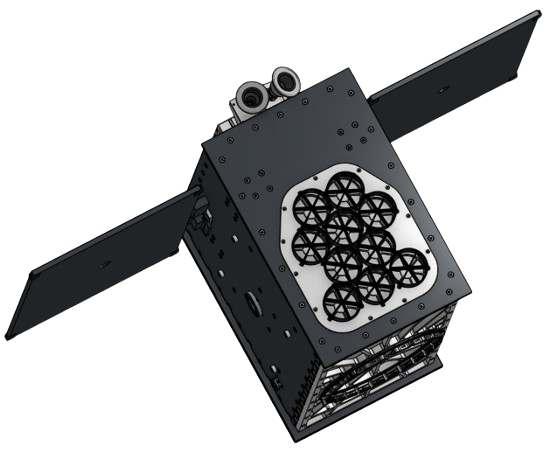
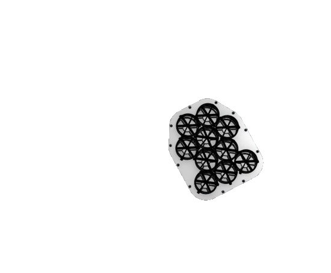
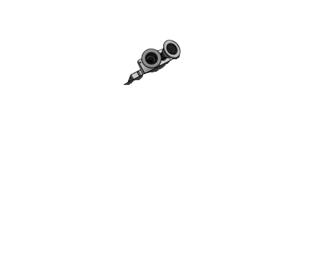

Our mission
NEBULA-Xplorer is the Netherlands Educational Satellite for Exploration of BinaryLinked Astrophysics - X-ray observer.
The goal is for a satellite to be launched into space around 2030 to conduct research into black holes. Or more specifically: how a black hole devours material from a star orbiting it.
Taking a closer look at black holes could ultimately yield more information about the origin of the universe.
Our baby


Our end goal
NEBULA-Xplorer will investigate how jets form and how X-ray binaries evolve. It will observe these objects for long periods of time to see how their emission varies on time scales from milliseconds to weeks. This long observation time makes it possible to combine X-ray activity with data from other wavelengths from other telescopes.
Our values
Our plan
September 2024 - 9 master students: Instrument Concept
November 2024 - 19 bachelor students: Orbits / Ground Stations / Telemetry / ...
Januari 2025 - 10 bachelor / 1 master thesis & 1 student secondary vocational studies (LiS): Satellite + Concentrators + Readout electronics
September 2025 onwards: Prototypes, engineering model, outreach, management
September 2027 onwards: flight model, testing, outreach, management
September 2029 onwards: Launch, science, outreach, management